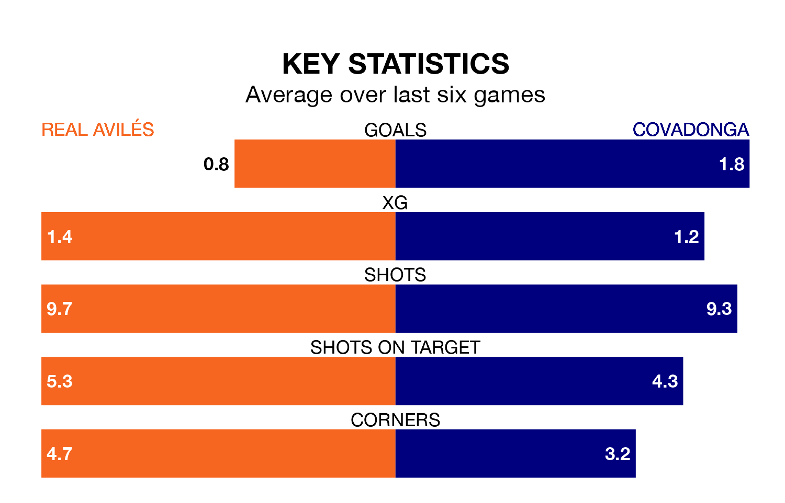

Struggling Covadonga face Real Avilés away at the Estadio Román Suárez Puerta on Sunday looking to build on a win in their last league outing.
After securing all three points with a 1-0 victory over Real Oviedo B on April 14, Covadonga sit 17th in the Segunda División RFEF Group 1.
They travel to play an Avilés side ninth in the standings, who lost in their last match, 2-1 against Arandina CF, on April 13.
With 34 goals in 31 games so far this season, Covadonga are scoring at the league's average rate with 1.1 goals per game. And they are conceding more than average, letting in 52 goals at a rate of 1.7 per game.
Avilés, meanwhile, are above average scorers, with 1.2 goals per game. They have conceded 1.0 goal per game.
The home team are in bad form in the Segunda División RFEF Group 1, with one win and a draw from their last six games.
With three wins and three losses over that period, the visitors' form is better – they have taken nine points from 18, compared to Avilés's four.
In the last five years, Avilés and Covadonga have played each other on four occasions. Avilés won one of them, Covadonga two, and they drew once.
On average, Avilés scored 1.0 goal and Covadonga 2.2 in those matches.
Their last meeting was on December 10, when Avilés won 3-0 away.
Updated: 15:40 (UTC), 18/04/24